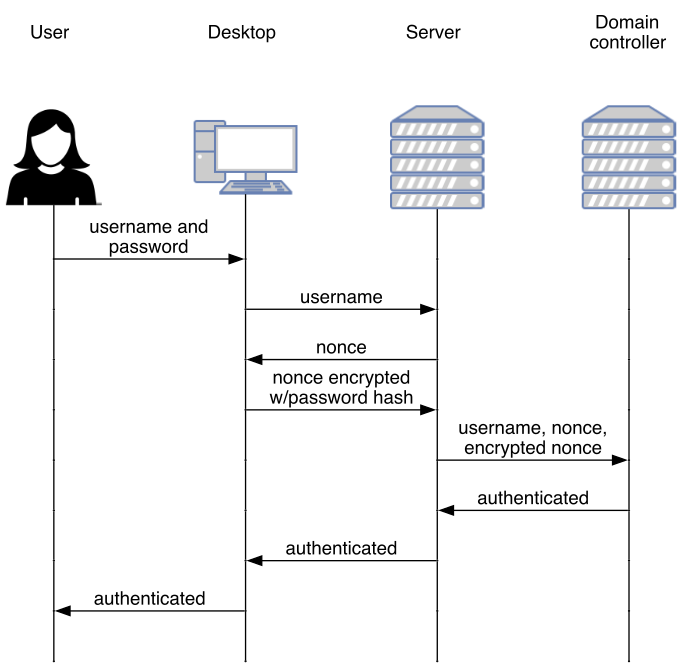

# CS 4760 ### Network Security <p class='titlep'> </p> <div class="titlesmall"><p> <a href="http://www.cs.virginia.edu/~asb">Aaron Bloomfield</a> (aaron@virginia.edu)<br> <a href="http://github.com/aaronbloomfield/nws">@github</a> | <a href="index.html">↑</a> | <a href="?print-pdf"><img class="print" width="20" src="../slides/images/print-icon.webp" style="top:0px;vertical-align:middle"></a> </p></div> <p class='titlep'> </p> ## Course Conclusion
# Contents [Miscellaneous Topics](#/misc) [Course Reflection](#/reflection)
# Miscellaneous Topics
## Set UID bit - One can have a program run as the owner, rather than the user running it - Done via the Set UID bit - `chmod 4755 <file>` - If that file is *root*, then it's a potential security hole - Many UNIX systems prevent changing of the executable in memory that has this bit set ## Privilege Escalation - Obtaining "more" privileges than the user already has - Perhaps super-user, etc. - Done via some type of security flaw - Bad passwords, buffer overflow, other vulnerability, etc. - Types: - Vertical: become a more "powerful" user - Horizontal: gain privileges of another user of the same "level" ## Windows Authentication  ## Pass the Hash - If one can gain access to a Windows system - And if they can gain a password hash - Perhaps by viewing it on the network - They can move throughout the network, using the hash as the authentication mechanism - They don't need to know the password! - Attack targets: - Attacking services: DNS, LDAP, etc. - Exfiltrating data ## Kerberos - Handles both authentication and authorization - Normal authentication method: - User enters password, which is hashed - Hashed password is sent over the network - It's compared to what's in the DB to check if it matches - Kerberos hashes the password, but: - Doesn't send it over the network - Uses it as the encryption & decryption key [](https://commons.wikimedia.org/wiki/File:Kerberos_protocol.svg) ## Kerberos Usage - Default on Windows when both client & server are part of the same domain - The same *trusted* domain - Runs on UNIX, Linux, and Mac OS also - If either is not, or if the domain is not trusted, then it defaults to sending a password hash - Problem: a single trusted server is needed - And that server is the target of many attacks ## Password cracking - Using GPUs: an nVidia 4090 (about $2k) - 8 character password: 6.5 hours - This can be sped up if you assume "standard" password formation rules - The next slide has a table of password cracking times - But I think it's off by one row <!-- .slide: class="no-border" --> ## Password cracking time [](https://tech.co/password-managers/how-long-hacker-crack-password) <h2 class='xkcd'>Password Strength</h2> <img src="https://imgs.xkcd.com/comics/password_strength.png" title="To anyone who understands information theory and security and is in an infuriating argument with someone who does not (possibly involving mixed case), I sincerely apologize." alt="Password Strength" srcset="https://imgs.xkcd.com/comics/password_strength_2x.png 2x" style="image-orientation:none" class='stretch'> <p class='center'><a href='http://xkcd.com/936/'>xkcd # 936</a></p>
# Course Reflection
## Course Goals - Understand network models, both OSI and TCP/IP - Understand how to analyze network traffic and how to scan for malware therein - Understand the details of common network attacks, as well as their defenses (ARP, DOSes, etc.) - Understand the common network services that help to secure a network (DNSSEC, VPNs, PGP, firewalls, etc.) - Understand the role and use of cryptography in network security (AES, RSA, DHE, TLS, etc.) - Be able to secure a network from outside attacks <h2>HW comments</h2> <table class="transparent"> <tr><td style="width:45%"> <p>"Small" homeworks</p> <ul> <li>HW S1: Google survey (link on Canvas landing page)</li> <li>HW S2: Docker setup</li> <li>HW S3: Linux tutorial</li> <li>HW S4: Network commands tutorial</li> <li>HW S5: Metasploitable2 Exploration</li> <li>HW S6: Web of Trust</li> <li>HW S7: Snort</li> </ul> </td><td style="width:10%"></td><td class="top" style="width:45%"> <p>Programming homeworks</p> <ul> <li>HW P1: ARP Spoofing and Detection</li> <li>HW P2: Ping Commands</li> <li>HW P3: Wireshark</li> <li>HW P4: TCP Reconstruction</li> <li>HW P5: DNS Spoofing</li> <li>HW P6: Cross-Site Scripting</li> <li>HW P7: Capture the flag</li> </ul> </td></tr></table> </section> ## Topics we didn't cover - We pretty much covered everything I intended us to cover ## What didn't work well - A few of the homeworks were a bit rough - ARP, in particular - Docker suddenly stopping working half-way through the semester - Delays getting out the homeworks - My slowness in regrading - Support request response slowness ## What did work well - The lecture topics; all the intended material was covered - The homeworks, for the most part - The combination of smaller and larger homeworks - The Docker containers (when they worked right) ## Did I push too hard? - I feel that the frustration was more caused by other issues than the raw work load: - Problems debugging some network issues - Problems with some homework specifications - Factoring that out, was it too hard? ## Changes for next time - I don't have to create everything from scratch! - A few more homeworks - I still want to do a DNS homework - Docker configuration updates - More CTFs, perhaps ## Let me know your comments! - Please send us your feedback! - Either by e-mail or anonymously or on the course surveys - Please fill out the course surveys! <h2>Have a great break!</h2> <img class="stretch" src="//www.adamfishercox.com/calvinandhobbes/pageimages/laststrip.png" alt="calvin and hobbes" style="width:100%;background-color:white">